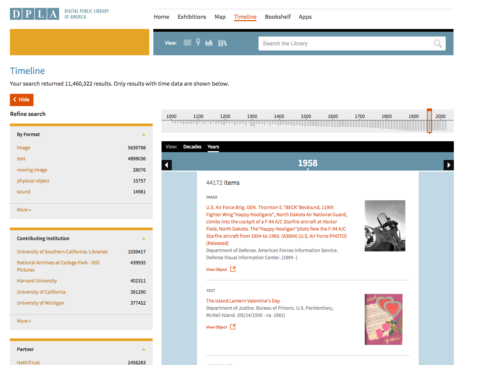

Exploring Library Collections
Virtual Browsing at NCSU Libraries and Beyond
Kevin Beswick
Digital Technologies Development Librarian, NCSU Libraries
Agenda
Environmental Scan / Introduction
Motivations
NCSU Virtual Browse Project
Challenges, Future Directions
Specifically we're going to look at examples of interfaces that encourage browsing behavior both inside and outside of libraries.
I'm going to talk about why we're interested in working on this problem, and why other libraries should care.
I'll talk about the work we've been doing at NCSU to encourage browsing.
Finally I'll talk about some of the challenges we've ran into, how we've went about solving some of them, and what we're planning on looking at in the future.
Amazon - http://www.amazon.com
Many of the interfaces we use everyday are designed to encourage browsing behavior. Amazon almost overwhelmingly offers many different
types of recommendations at almost every step in the user's shopping experience. For some users, this might be annoying, but for many
these recommendations are useful in finding something better, or related to whatever it is they were looking for, or even unrelated yet interesting.
I'd argue that the placement and quality of these recommendations are a piece of what makes Amazon more successful than its competitors.
Netfix - http://www.netflix.com
Here's another example - the first screen you see when you log on to Netflix is one that is composed of many lists of recommended titles.
The algorithms, dimensions of likeness, design, and labeling play a key role here. They always seem to know what will interest you, and the
colorful covers draw you in.
Netfix Prize - http://www.netflixprize.com
In fact, the approaches to generating recommendations are so important to Netflix that they offered $1 million to anyone who could
improve the results of their existing algorithm by 10%. Netflix has many more users than the average library. But the number of
titles available on Netflix at any given time is approximately between 10-20k. This is a fairly small collection when compared to
the collections' held by even smaller libraries let alone a larger library.
Columbia University Libraries - https://clio.columbia.edu/catalog
We've been encouraging browsing and serendipitous discovery in Libraries since before the internet existed. This took the form
of the way we organized books on the shelves, grouping similar subjects together. Today, by far, we've mostly focused on re-implementing
the experience of shelf browsing in our digital environments, and have expressed it in different ways, each
having their own advantages. Here's Columbia University's implementation - list style very much like the style we've gotten used
to with search results in library catalogs, very easy to scroll through. They call their version "Virtual Shelf Browse".
LibraryThing - https://www.librarything.com/
Here's LibraryThing's implementation, similarly called "Virtual Shelf Browser". The design is more reminiscent of the stacks
that we all have found ourselves browsing at one time or another. It's very visually based, with a lot of titles on the screen at one time.
When you click on a title, you get a tooltip with a larger cover image, more information about the book and a button to see the full record.
Each row on the shelf even shows the Library of Congress call number range for that row.
OpenLibrary - https://openlibrary.org/
OpenLibrary offers recommendations with larger covers but fewer items displayed at once. This doesn't appear to be call number sorted
but offers recommendations based on different access policies - free books as well as books that you can borrow.
DPLA - http://dp.la/
DPLA's "Bookshelf", which uses Harvard Library Innovation Lab's StackLife project, offers another call number sorted list, but with a unique spine view,
where the thickness and length of a book corresponds to the actual length and number of pages, and usage statistics influence the darkness of the color
of the book. They also go a step further and offer recommendations for related images in their collections as well.

DPLA - http://dp.la/
DPLA offers a couple more interesting alternatives to traditional shelf browsing. This one is an interactive timeline that
lets you browse similar works in chronological order.
DPLA - http://dp.la/
And here's an interactive map view that allows you to browse items based on their geographic location, if there is geographic data attached to the
item
Motivation for Libraries
Full view of entire library collection across all locations
Increasing number of E-Books
Can browse from any location, not bound to physical presence
Browsing features are ubiquitous in many widely used web applications today
So we've seen some examples of interfaces that encourage browsing behavior both inside and outside of libraries, but why should we care?
Well, libraries have vast collections, and much of the time they are distributed across several locations. They also may not even be exposed
as physical objects at all, as we purchase more and more titles in electronic format. Implementing these types of interfaces will
give users a view across the entire collection, and offer them more opportunity to find related items that might interest them, or for
serendipitous discovery.
Another clear advantage is that this type of browsing can be experienced from any location rather than being physically bound to the
library building. Finally, users have come to expect this experience, as it's embedded in so much of their online experiences like
shopping, news gathering, social networking, music or movie streaming. Why shouldn't their library offer something like this too?
Motivation for NCSU
More books being moved to offsite storage
bookBot - Automated Storage Retrieval System for majority of the collection in our new library
Faculty Demand
More specifically, for NC State, we became motivated to explore this area as more of our collection was being moved to offsite
storage in order to free up more space for collaborative study areas. Also, we recently opened a second main library where
the vast majority of the collection was to be housed in an Automated Storage and Retrieval System in order to conserve space.
This meant that the ability to browse the stacks had been taken away, and as a result, concerns were raised by faculty as to
what this meant for browsing the collection.
Virtual Browse Project @ NCSU
Aim to develop new virtual browsing tools for exploring the collection
Cross departmental involvement from:
IT
Digital Library Initiatives
Research and Information Services
User Experience
Acquisitions & Discovery
Collection Management
Special Collections Research Center
In light of these events, we created a cross departmental team to explore these issues, with the aim of developing new
virtual browsing tools for exploring the collection. The involvement ranged from technical staff to frontline staff, to
metadata people, collection management and special collections.
VB Services Architecture
I'll be talking about a few different outcomes from this group. Here's a diagram that shows how these systems are all interrelated.
What you should take away from this is that our ILS feeds data to our Virtual Shelf Index, and that the Virtual Browse applications
we've developed all interact primarily with the catalog API. The catalog handles making the requests to the Virtual Shelf Index as well as for
supplemental content like cover image URLs, summaries, table of contents from an external service.
Virtual Shelf Index
PHP-based web service that can be queried by Call Number or Record ID, and returns a set of records in call number order
Backed by a MySQL database that is updated nightly with new records
Records are retrieved from our ILS, run through scripts which sort by call number, and assign a "batch ID" so that we can use simple SQL queries to get consecutive records out of the database
The first piece of the puzzle is the Virtual Shelf Index, which is our main data source for our shelf browing implementations. It's a PHP
based web service that is queryable by Call Number or our catalog's internal record ID, and returns a list of items sorted in call number
order. This information is stored in a MySQL database that is updated regularly with records from our ILS. We maintain some scripts that
are responsible for padding and sorting call numbers, and assign something we call a "Batch ID", which is just the numeric index
of an item when our collection is arranged in call number order. This enables us to use simple SQL queries to more easily get sorted records
out of the database.
Here's the full record page of our catalog. You can see on the right sidebar, there's a button for "Browse Shelf", and near the bottom
beside the call number, you can see also see a smaller Browse Shelf link. Interestingly enough, the small link is clicked more than bigger button
Clicking either of those links will bring you here. This is the main "Browse Shelf" view in our catalog with two rows of 5 book covers. For
any item we don't have a cover for, we generate one (side note: if anyone has done any work on generating more interesting,
nicer looking book covers, let's talk)
You can scroll infinitely to the right or to the left to view more books on the shelf. You can also filter by location, or view the
results in list format.
We show the more visual representation by default because we believe that the visual metaphor of virtual browse obscures the difference between
a record representing an object and the object itself.
This is what you see if you click on a particular book cover. From here you're able to see basic metadata about the book, supplementary
information like summary, table of contents or Google Books Preview if they are available. You can also see whether the item is checked out,
add it to your cart (or list), or go to the full record.
Virtual Browse in the Catalog
Recent usability test suggested that users find this feature useful, but usage statistics are lower than expected
Found that users often don't see the links to this feature, or are unsure what "Browse Shelf" means
Users preferred an alternative mockup that included an inline, abbreviated view of the feature on full record page
We conducted a usability test on this feature fairly recently. We noticed that people were overwhelmingly unaware of the feature, but
said they would be very likely to use it in the future. We noticed that respondents often didn't see the link, or didn't understand
the terminology we used. We showed them several mockups of alternative designs or labeling, and the one that was by far the most
popular was an abbreviated inline view of "Browse Shelf" on the full record page.
Here's a picture of the automated storage and retrieval system at our new library, called the bookBot. Conveniently situated
right between the large windows is a large touchscreen kiosk that was to have a virtual stack browsing tool displayed proudly
to users and visitors to the library, to let them know that although we've closed off our collection, you can still easily
browse it just like you could in the stacks.
Virtual Browse Kiosk
Hardware: PerceptivePixel touchscreen
Software: implemented as a front-end web application in HTML/CSS/JS using the Angular.js framework
Primary Goals:
Provide a larger-scale, more visual search/browse environment
Functionality to demo and request items from the bookBot
The application that was running on here was recently redesigned and re-implemented as an Angular.js web application, re-using the
catalog web service, and virtual shelf index as a backend. The main goals other than the one I mentioned before is to provide
a large scale, interactive, visual search and browse envrionment, to allow users to request items from the bookBot, and to allow
visitors to run a demo of the bookBot.
Virtual Browse Kiosk Demo
Here's a short video showing the main functions of the kiosk. Prominently displayed is a demo button which when pressed, signals
the ASRS to kick off the process of retrieving and replacing a bin of books. From the main screen you can browse from several pre-defined
categories, or begin your own search. The results screen is laid out grid style with large book covers and basic information about the
books. You can also add items to your cart from here. You can infintely scroll through the results.
When you choose a book, you are brought to a full record and browse view, where you can see more details about the book and view any
supplemental information we have. You can also drag to browse the virtual bookshelf, which is also infinitely scrollable. Tapping on a
book here will reload the full record view with information about that book.
From the cart view, you can request books that are available in the bookBot using your last name. You can also email a list of
basic metadata about the books, including a link to the catalog record, to yourself if they aren't available to request from the bookBot.
Challenges
Lack of available Call Numbers for e-books
Call number ordering has limitations as a method of browsing
Here are a couple challenges we've run into that we're working to address. Frequently, we're finding that the e-Book records that we're
getting don't have call numbers included, so they can't be included in our virtual shelf index. Also, call number ordering has
some limitations as a method of browsing. Specifically, a book can only be located in only one spot on the shelf, even though there may be many
places that would be appropriate to shelve the book. So while the results that you see while virtually browsing will most likely be related, there's a
good chance you're missing a lot of other related books because they're located elsewhere in the index.
Automatically Improving Call Number Availability
Built a tool which processes batches of MARC records, and adds call numbers using the OCLC Classify API
Tested with Serials Solutions eBook records
Able to assign call numbers to about 43% of records in the batches we tested
To address the first issue, we've built a simple tool that processes batches of records that we receive from vendors,
and automatically assigns call numbers to them using the OCLC Classify API. We find that in a lot of cases, there are no
call numbers included in these records, or they are syntactically badly formed, where they often appear as a range, rather than a definitive
call number. We have tested this tool on some Serials Solutions records, and have been able to assign call numbers to about 43%
of all records that had bad call numbers or no call numbers. This isn't perfect, but it is still quite a big improvement.
Find More
Tested various approaches to recommending similar books based on Subject Headings
Leverages Solr to implement recommendations, presented as a coverflow on catalog full record page
Titles can appear in more than one place/recommendation, as opposed to shelf browse
Performed well when there were accurate subject headings available for a given title
We've also been experimenting with approaches for recommending similar books based on subject headings rather than call numbers that we've been calling "Find More" internally.
We're using Solr to automatically perform subject heading searches in different ways in order to get related books to the one you're
looking at, and presenting it as an inline coverflow on the full record page of the catalog. This approach does not have the same
limitation as call number ordering as a book can be recommended as many times as appropriate. This method of course still relies on
having good data available, and doesn't work perfectly in all situations, but in our testing it performed well enough often enough
to make the decision to implement into our catalog.
Here's a mockup of what we are planning on implementing based on our experiments with Find More, as well as the usability testing
results for Browse Shelf in the catalog. We were inspired by Amazon offering different styles of recommendations in very close
proximity to each other, and we've found that the recommendations we get from both of these methods are usually different. The
covers you see in this mockup are not based on real data.
Graph Browse
New feature we're working on for the Virtual Browse Kiosk
Browse titles as a network graph, where nodes are individual books and links are subject headings
Interactive visualization using Sigma.js, currently showing around 350 books per graph and representing several related subject areas
We're also working on a new feature related to this for the Virtual Browse Kiosk. This approach uses recursive subject heading-based
recommendations to create a network graph of related titles, where nodes are books, and links between them are subject headings.
We're re-using the Solr index to generate custom network graphs on the fly, and visualize them with Sigma.js.
The advantage to this approach is that we can show many more books at once, and can represent additional subject areas related to the
original book.
Graph Browse Demo
To show you what I mean, let's watch a demo. From the full record view, there's a new set of buttons to toggle between browsing methods.
When the data is loaded, a force layout algorithm is applied so that like books attract, and subjects become clustered together.
The Louvain community detection algorithm is also applied so that subject areas are colored. This allows us to provide an interactive
legend of subject areas, where tapping on a subject will zoom to the appropriate part of the graph.
You can pinch to zoom to see titles of the books, rotate the graph, as well as tap on individual nodes to get more information. We're
working on figuring out which information is best to include on the tooltip.
Here you can see the legend view of the different subject areas represented. The original book was on machine learning and decision
making. You can see there are a couple other highly related subjects that the algorithm has included books from, and then there are a couple
books about Geology, likely because one of the recommended titles was about machine learning and geology.
Obstacles
Lack of supplemental information for many items (cover images, summary/table of contents)
How well will new browsing methods developed for a touchscreen translate to the web?
We're still hoping for a better solution to the amount of supplental information that's available for books, as this
would improve the browsing experience for users. With development happening on the web, and on a large-scale touchscreen,
two very different mediums, we're also starting to think about how the browsing methods we develop for one will translate to the other,
whether it is appropriate for them to converge, and what the challenges associated with that would be.
Looking to the Future
Launch Graph Browse feature
Implement Find More into catalog
Continue exploring methods of browsing along different dimensions of likeness
Looking toward the future, we're planning on launching the graph browsing feature that I showed very soon, after an iteration of
feedback and improvements. We're ready to start work on implementing the Find More feature into the catalog, using the mockup I showed
earlier as the basis. We're also continuing to think about different approaches to encourage browsing and serendipitous discovery
and what other dimensions of likeness would be interesting to experiment with besides subject. Our goal is to further improve our
interfaces and algorithms when it comes to browse so that our tools are better exposed and more useful in helping users find what
they are looking for (or maybe what they aren't looking for).
Thank you!
NCSU Libraries
kdbeswic@ncsu.edu
@kbeswick on Twitter
Supplemental Links
Find More Code4Lib talk (2014)
Catalog Virtual Browse Resources